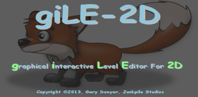
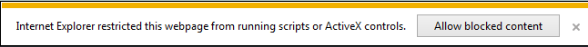

|  |
| Welcome to the exciting world of 2-D game level development! giLE-2D is a level editor specifically targeted at creating levels for the AGK (App Game Kit) game development engine, by the Game Creators. |
| AGK is a cross-platform, one stop solution for making game apps for mobile devices and Microsoft Windows®. |
| giLE-2D is being developed to help the indie and pro game developer alike make 2-D game levels quickly and easily. With its powerful and intuitive interface, giLE-2D makes creating 2-D levels a snap. Included with giLE-2D is a test game framework that you can use to quickly play-test your creations... just supply artwork! |
| Below is a table of contents. We highly recommend reviewing the "Getting
Started" section of this help system before plunging in. It contains
important information on how to get the best out of giLE-2D
and briefly describes all the major features such as default sprite type
creation, cloning, physics settings, coordinate systems and player
attributes. Each section, depending on the subject matter, may contain instructional videos to help explain certain concepts because, as you all know, level development is a highly visual pursuit! |
| If you are using Microsoft Internet Explorer as
your default browser, pages in this help system with embedded videos may
present you with the following message:  Please click the "Allow Blocked Content" button. This will allow the help system to connect to YouTube to display the video. |
| Thank you for using giLE-2D, and LEVEL UP! |
| A. Getting Started |
| B. System Requirements |
| C. EULA |
| D. Feature List |
| 1. Creating Your First Map |
| 2. Media And Your AGK Project |
| 3. Importing Media and Powers Of Two! |
| 4. Your Map Backdrop! |
| 5. Adding Your First Sprite - Sprite Types |
| 6. Adding Your First Sprite - The Layer Manager |
| 7. Adjusting Your Sprite - Move And Snap |
| 8. Adjusting Your Sprite - The Properties Inspector |
| 9. giLE2D Settings |
| 10. A Look At Your Sprite Inventory |
| 11. Deleting Sprites |
| 12. Deleting Layers |
| 13. Bring On The Clones - Cloning Sprites |
| 14. Exporting Your Map |
| 15. Technical - The Map File Structure |
| 16. Programming AGK To Parse Your Map |
| 17. The Game Test Framework - Run Map |
| 18. Thoughts About The Future |
| 19. Recommended Reading |
| 20. Recommended Websites |